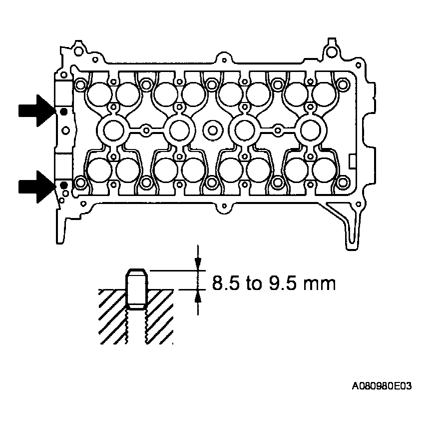
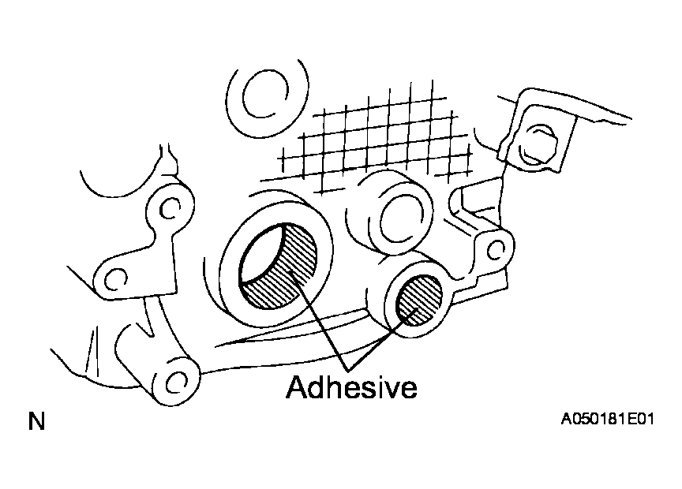
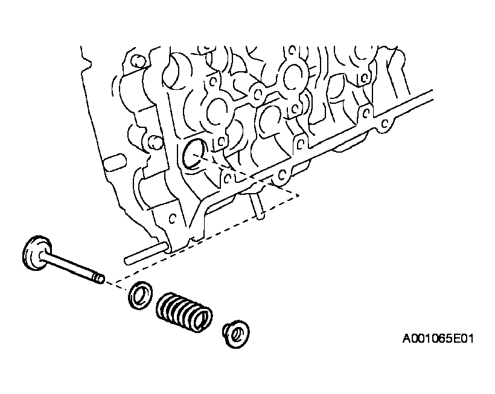
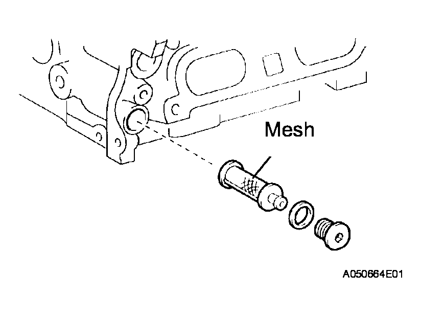

Cylinder Head, Intake Manifold, Exhaust Manifold: Reassembly
- INSTALL CAMSHAFT BEARING CAP SETTING RING PIN
- Using a plastic-faced hammer, tap in a new ring pin to the specified protrusion height.
Standard protrusion height: 8.5 to 9.5 mm (0.335 to 0.374 in.)
- Using a plastic-faced hammer, tap in a new ring pin to the specified protrusion height.
- INSTALL STUD BOLT
- Using E5 and E7 "Torx" sockets, install the 7 stud bolts.

Courtesy of © TOYOTA, LICENSE AGREEMENT TMS1002Torque: 10 N*m (102 kgf*cm, 7.4 ft.*lbf) for bolt A
4.0 N*m (41 kgf*cm, 35 in.*lbf) for bolt B
10 N*m (102 kgf*cm, 7.4 ft.*lbf) for bolt C
9.0 N*m (92 kgf*cm, 80 in.*lbf) for bolt D
- Using E5 and E7 "Torx" sockets, install the 7 stud bolts.
- INSTALL UNION
- Mark the standard position away from the edge onto 2 new water hose unions as shown in the illustration.
- Apply adhesive to the water hose union hole of the cylinder head.

Courtesy of © TOYOTA, LICENSE AGREEMENT TMS1002Adhesive: Part No. 08833-00070, THREE BOND 1324 or equivalent
- Using a press, press in the water hose union until the marks come to the same level as the cylinder head surface.
Standard protrusion
WATER HOSE UNION PROTRUSION SPECIFICATIONUnion Specified Condition A 29 mm (1.14 in.) B 44 mm (1.73 in.) NOTE:- Install the water hose union within 3 minutes of applying adhesive.
- Do not expose the water hose union to engine coolant for at least one hour after installation.
- INSTALL VALVE STEM OIL SEAL
- Apply a light coat of engine oil to the valve stem.
NOTE: Installing the oil seals for the intake and exhaust onto the opposite valve guide bush may cause failures.
HINT:
The intake valve oil seal is light brown and the exhaust valve oil seal is gray.
- Using SST, push in a new oil seal.
SST 09201-41020
- Apply a light coat of engine oil to the valve stem.
- INSTALL INTAKE VALVE
- Install the valve, spring seat, valve spring and spring retainer.

Courtesy of © TOYOTA, LICENSE AGREEMENT TMS1002NOTE: Install the same parts in the same combination to the original locations. - Using SST, compress the valve spring and place the 2 retainer locks around the valve stem.
SST 09202-70020 (09202-00010)
- Using a plastic-faced hammer and the valve stem (not in use) with the tip wrapped in tape, lightly tap the valve stem tip to ensure a proper fit.
NOTE: Be careful not to damage the valve stem tip.
- Install the valve, spring seat, valve spring and spring retainer.
- INSTALL EXHAUST VALVE
- Install the valve, spring seat, valve spring, and spring retainer.
- Using SST, compress the valve spring and place the 2 retainer locks around the valve stem.
SST 09202-70020 (09202-00010)
- Using a plastic-faced hammer and the valve stem (not in use) with the tip wrapped in tape, lightly tap the valve stem tip to ensure a proper fit.NOTE: Be careful not to damage the valve stem tip.
- INSTALL OIL CONTROL VALVE FILTER
- Using an 8 mm hexagon wrench, install the filter with a new gasket and the plug.

Courtesy of © TOYOTA, LICENSE AGREEMENT TMS1002Torque: 30 N*m (306 kgf*cm, 22 ft.*lbf)
- Using an 8 mm hexagon wrench, install the filter with a new gasket and the plug.
- INSTALL VALVE LIFTER
- Apply a light coat of engine oil to the valve lifter.
- Install the valve lifter.
- Check that the valve lifter rotates smoothly by hand.
- INSTALL NO. 1 TAPER SCREW PLUG
- Using a 10 mm hexagon wrench, install the taper screw plug with a new gasket.
Torque: 44 N*m (449 kgf*cm, 33 ft.*lbf)
- Using a 10 mm hexagon wrench, install the taper screw plug with a new gasket.